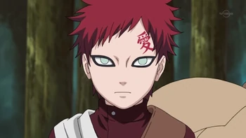
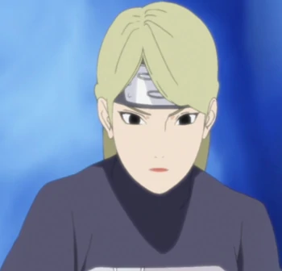
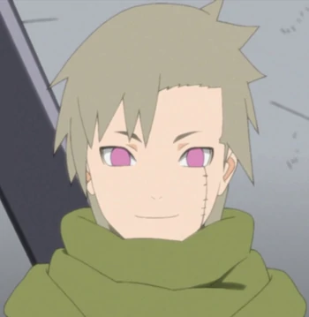
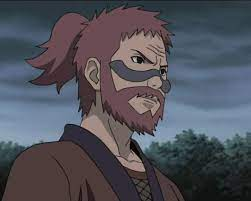
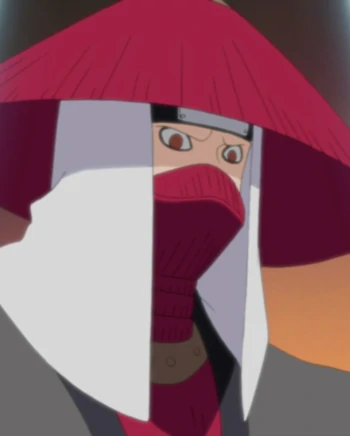
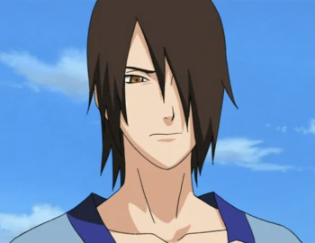
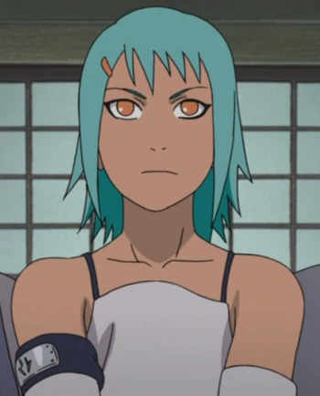
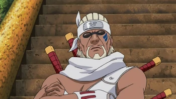
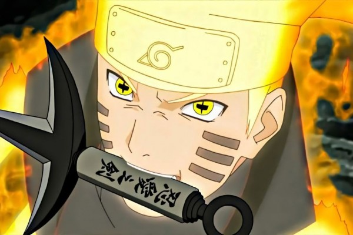

Jinchuriki
Dalam serial Naruto terdapat 9 bijuu atau mahkluk misterius yang tersebar di berbagai tempat. Orang yang dapat mengendalikan kekuatan bijuu disebut Jinchuriki. Menjadi Jinchuriki bukanlah sebuah hal yang mudah, mereka haruslah sanggup menampung kekuatan bijuu yang besar. Tapi, seorang Jinchuuriki juga akan mendapat kakuatan yang besar dari bijuu yang ada di tubuhnya. Namun, mereka juga akan mati jika bijuu dikeluarkan dari tubuh seorang Jinchuuriki.
Berikut 9 Jinchuriki yang dikenal:
        